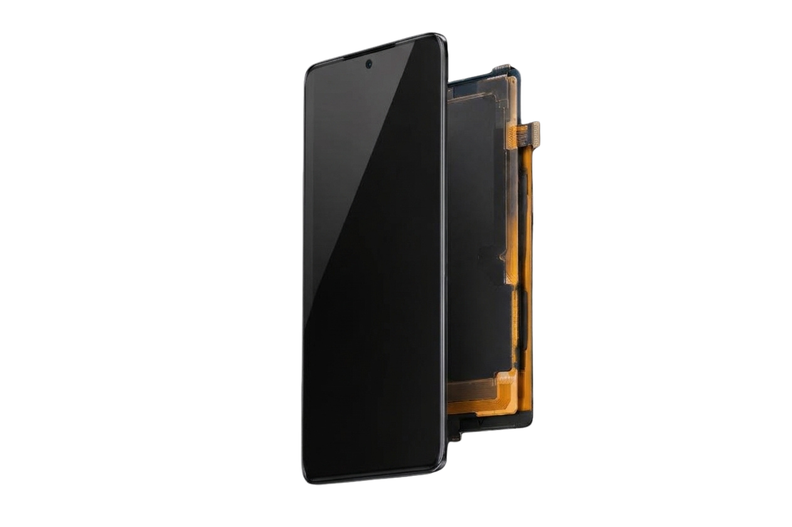

Por dentro
do celular
Cada peça faz uma coisa simples. Juntas, formam um computador que cabe no bolso. Aperte o play e deixe a página guiar você.
Tudo segue o mesmo caminho
Pense em tirar uma foto: a luz entra pela câmera, vira números, o processador melhora a imagem, a tela mostra o resultado e o armazenamento guarda o arquivo. Todo o celular repete este ciclo de quatro etapas, milhares de vezes por segundo.
O dedo toca o vidro, a luz entra pela câmera, o som chega ao microfone. Sensores transformam tudo isso em sinais elétricos.
A bateria entrega corrente estável, e a placa principal distribui a tensão certa para cada chip.
O chip lê zeros e uns, executa o aplicativo, decide o que fazer e guarda o que for preciso na memória.
A tela acende milhões de pontos de luz e o alto-falante faz o ar vibrar. Você percebe o resultado.
A tela: onde você vê e toca

Uma pilha de camadas com menos de 1 mm: o vidro protege, a grade de toque sente o dedo e o painel OLED acende cada pixel por conta própria. Escolha uma camada, ou clique nela no desenho.
Como a tela sente o dedo Interativo
Passe o dedo ou o mouse sobre a grade.
Cada cruzamento é um minúsculo capacitor. O dedo rouba parte do campo elétrico ali e a capacitância cai. O chip acha o centro dessa mancha escura e descobre onde você tocou.
Cada pixel são 3 luzes Misture
Taxa de atualização Compare
Quanto mais quadros por segundo, menores os saltos entre uma imagem e outra, e mais suave parece o movimento. Se o seu aparelho atualiza só a 60 Hz, o teste de 120 Hz vai parecer igual ao de 60.
A câmera: luz que vira dado

Quando um fóton atinge o silício do sensor, libera um elétron (efeito fotoelétrico). Mais luz, mais elétrons guardados naquele pixel. É assim que a luz vira número.
As lentes dobram a luz (refração) e formam a imagem nítida sobre o sensor.
Filtro Bayer: cada pixel mede só vermelho, verde ou azul.
A carga vira tensão e um conversor a transforma em um número.
O processador de imagem estima as cores que faltam, tira ruído e monta a foto.
O caminho da luz Animado
A lente curva os raios para que todos os que saem de um mesmo ponto do objeto cheguem ao mesmo ponto do sensor. A imagem chega de cabeça para baixo, e o processador a desvira.
Quanta luz entrou Arraste
Cada pixel é um balde que junta elétrons. O conversor lê quanto o balde encheu e transforma em um número de 0 a 1023. Se transborda, o pixel estoura e vira branco puro. Valores ilustrativos.
O sensor é daltônico Compare
Cada pixel mede uma só cor (padrão Bayer, com o dobro de verdes). O processador estima as duas que faltam olhando os vizinhos: é o demosaico.
A placa-mãe: onde tudo se conecta

A placa-mãe é uma cidade vista de cima: os prédios pretos são chips e, ao redor, há mais de mil peças minúsculas. Por dentro ela é um sanduíche de cobre e fibra de vidro, que leva sinais e energia a todos eles.
Por dentro da placa Corte lateral
Um sinal sai do chip A, corre por uma trilha, desce por uma via (um furo preenchido de cobre) até a camada 3, atravessa a placa e sobe por outra via até o chip B.
De 8 a 12 camadas de cobre ou mais, empilhadas com fibra de vidro. Cada camada tem uma função.
Os chips grandes são soldados por baixo, por esferas de solda em grade. Sem pinos.
Resistores, capacitores e indutores com menos de 1 mm filtram ruído e estabilizam a tensão.
Latas de metal protegem circuitos sensíveis de interferência e ajudam a espalhar calor.
O chip: cérebro e memória

O transistor é um interruptor controlado por eletricidade: ligado vale 1, desligado vale 0. Bilhões deles formam portas lógicas que somam, comparam e decidem. Toda foto, música ou jogo é uma longa sequência de zeros e uns.
Executa as instruções dos apps, passo a passo, bilhões de vezes por segundo.
Faz milhares de contas em paralelo para desenhar gráficos.
Acelera inteligência artificial: reconhece rosto, voz e objetos nas fotos.
Rápida e volátil: cada bit é uma carga num capacitor que vaza. Sem energia, apaga.
Memória flash: prende elétrons em células e guarda seus arquivos até com o celular desligado.
O transistor é um interruptor Clique
Porta sem tensão: circuito aberto, saída 0.
Um transistor real faz o mesmo, sem nenhuma peça móvel: a tensão na porta cria um canal por onde a corrente passa. É um interruptor com poucas dezenas de nanômetros.
Somar em binário Clique nos bits
Cada bit vale o dobro do anterior (1, 2, 4, 8). A caixa tracejada é o “vai um”. Seu celular faz contas assim, bilhões de vezes por segundo, com portas lógicas feitas de transistores.
O ciclo da CPU Em loop
Um processador de 3 GHz dá 3 bilhões de pulsos por segundo, com vários núcleos e várias instruções em andamento ao mesmo tempo. Por isso parece que ele faz tudo de uma vez.
Pirâmide de memória Velocidade
Barra maior = acesso mais rápido. Quanto mais perto da CPU, mais rápida e cara é a memória, por isso ela é menor. Valores aproximados.
A bateria: energia guardada em química

Dois eletrodos separados por um eletrólito. Os íons de lítio vão e voltam; os elétrons não atravessam o eletrólito e são obrigados a passar pelo circuito. Essa passagem é a corrente que alimenta o celular.
Som: alto-falante e microfone

Som é ar vibrando. O alto-falante transforma sinal elétrico em vibração, e o microfone faz o caminho inverso, transformando vibração em sinal elétrico.
A corrente passa pela bobina, que vira um eletroímã. O ímã a empurra e puxa, e a membrana move o ar.
Um alto-falante pequeno, usado nas ligações, protegido por uma telinha.
A membrana vibra, a distância até a placa fixa muda, e a capacitância varia. Um chip lê isso.
Um microfone capta o ambiente. O chip subtrai esse som da sua voz.
Laboratório do som Ao vivo
Toque em “Tocar tom” para ver a membrana do alto-falante vibrar. Aqui a câmera lenta ajuda: a vibração real é bem mais rápida.
Comece com o volume baixo do aparelho. A onda abaixo é uma prévia do tom escolhido.
Frequência é quantas vezes por segundo a membrana vai e volta (hertz). Quanto maior, mais agudo o som. Em 100 Hz o alto-falante de um celular quase não soa: ele é pequeno demais para mover tanto ar. No teste do microfone, o som é analisado no seu aparelho e não é gravado nem enviado.
O que mais existe lá dentro
Dá rigidez, espalha o calor do processador e, nas laterais, faixas plásticas separam trechos de metal que funcionam como antenas.
Acelerômetro e giroscópio medem aceleração e rotação com estruturas de silício microscópicas. É assim que a tela gira.
Wi-Fi, Bluetooth, GPS e rede móvel convertem sinal elétrico em ondas de rádio. O GPS mede o tempo dos sinais de satélites.
Uma massa é empurrada por uma bobina e faz o aparelho tremer, para avisar notificações e dar resposta ao toque.
Sensores apagam a tela quando você encosta o rosto e ajustam o brilho conforme a luz do ambiente.
Protege tudo e, por ser de vidro ou plástico, deixa passar os sinais de rádio. Em alguns modelos, permite carregar sem fio.
por ouvir
Luz vira elétrons, toque vira campo elétrico, som vira vibração, tudo vira zeros e uns, e a bateria mantém a engrenagem girando. Um supercomputador de bolso, feito de peças simples.